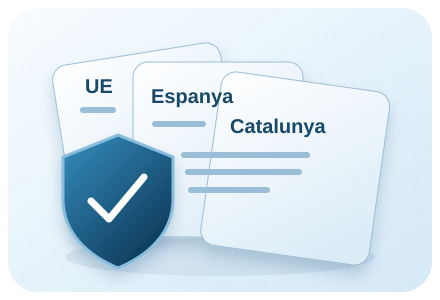
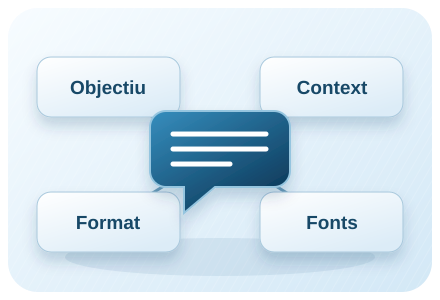
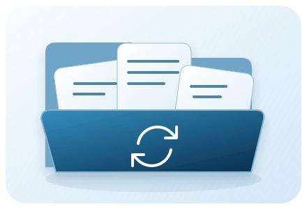

Aquests marcs se superposen: la normativa europea també s’aplica a Espanya i Catalunya. Aquí distingim normes obligatòries, orientacions institucionals i propostes per a la pràctica docent. És una selecció formativa, no un dictamen sobre una eina concreta.

MARCS QUE SE SUPERPOSEN
Tres àmbits, una mirada conjunta
UE, Espanya i Catalunya comparteixen l’espai d’aplicació. Cal llegir conjuntament les normes i distingir-les de les orientacions educatives. [1][4][5][7][8]
Unió Europea · normativa
IA i drets de les persones
El Reglament d’IA diferencia usos segons el risc. En educació, prohibeix inferir emocions, amb les excepcions mèdiques o de seguretat previstes. Determinats usos d’admissió i avaluació apareixen a l’annex III; cal llegir-los amb l’article 6. [1]
El RGPD exigeix una base jurídica i dades adequades i limitades a la finalitat. També regula les decisions exclusivament automatitzades amb efectes jurídics o similars significatius. [4]
Espanya · normativa
Dades, menors i autoria
La LOPDGDD complementa el RGPD. L’article 7 situa en 14 anys la referència del consentiment del menor; per sota, si aquesta és la base del tractament, cal el consentiment dels representants legals. Això no autoritza automàticament qualsevol eina. [5]
La propietat intel·lectual també compta: citar una obra no dona un permís general per carregar-la o redistribuir-la. L’article 32 estableix condicions i límits per a la cita i la il·lustració educativa. [6]
Catalunya · normativa i orientacions
Aplicació al centre
La Llei 32/2010 regula l’APDCAT i el seu àmbit de supervisió. La competència concreta depèn del responsable del tractament. [7]
Les orientacions d’XTEC recomanen no introduir dades personals en IA generatives i revisar entrenament i memòria. Són orientacions educatives, que cal llegir juntament amb les instruccions vigents del centre. [8]
Calendari europeu: les dates no són totes iguals
2 febrer 2025Aplicació inicial de prohibicions i alfabetització en IA. [3]
27 juliol 2026Entra en vigor la reforma AI Omnibus. L’article 4 passa a exigir mesures de suport al desenvolupament de l’alfabetització, sense garantir un nivell individual determinat. [2]
2 agost 2026Aplicació general amb excepcions, incloses disposicions de transparència. Les obligacions concretes varien segons el paper i el tipus de contingut. [1][3]
2 desembre 2027Nou termini per als apartats 1–3 del capítol III sobre sistemes d’alt risc de l’annex III, que inclou supòsits educatius. Per als de l’annex I: 2 d’agost de 2028. [2]
Selecció de fites rellevants; hi ha altres excepcions i règims transitoris. La reforma també introdueix noves prohibicions aplicables el desembre de 2026. Cal consultar els textos per determinar el cas concret. [2]
Tres comprovacions diferents sobre l’edat
Una cosa és el consentiment per tractar dades; una altra, l’edat i les condicions del servei; i una tercera, el que preveu el centre. XTEC publica orientacions generals i una taula per plataformes. No converteixis «14 anys» en una autorització universal. [5][8][9]
Abans de preparar una activitat amb IA
Defineix la finalitat educativa i confirma l’eina i el compte admesos pel centre.
Revisa les condicions d’edat, els permisos i les dades necessàries.
Utilitza dades fictícies quan n’hi hagi prou. Canviar noms per codis no garanteix anonimat.
Consulta el delegat de protecció de dades quan correspongui; una avaluació d’impacte pot ser necessària si hi ha risc elevat.
Preveu revisió docent i una alternativa accessible per a l’alumnat.
Llista pràctica d’iAducació basada en el RGPD i XTEC; no certifica compliment. [4][8]
Orientacions del Departament · 2026
Menors de 14 anys: alfabetització amb el docent operant l’eina i sense ús autònom d’IA general; les eines específicament educatives requereixen garanties. Entre 14 i 18, distingir missió d’interès públic, autorització familiar recomanada i requisits contractuals. El centre gestiona els accessos i les autoritzacions que pertoquin. OIA-01/02, p. 12–13; OIA-23, p. 25. Consulta les pautes detallades.
02
DE LA INTENCIÓ A UNA PETICIÓ CLARA
Enginyeria de prompts
Un prompt és la petició amb què orientem la resposta: pot incloure una pregunta, instruccions i context. Dissenyar-lo i ajustar-lo després de revisar el resultat és el que anomenem enginyeria de prompts. Una petició clara ajuda, però no garanteix la veracitat. [10][11]

DE LA IDEA A LA INSTRUCCIÓ
Una petició amb peces ben definides
Combina objectiu, context, format i fonts. Després, revisa la resposta i ajusta la petició. [10]
FORMULAR · CONTEXTUALITZAR · REVISAR
La clau de tot: l’enginyeria de prompts
Com formular instruccions clares per crear recursos educatius adaptats a la teva aula.
La qualitat del material generat per la IAG depèn directament de l'art de formular bones instruccions. Això s'anomena "enginyeria de prompts". Una indicació ben dissenyada és clara, concisa i aporta tot el context necessari. A continuació, explorem com passar d'una indicació simple a una d'experta.
Comparativa de Prompts
PROMPT SIMPLE
"Fes un text sobre el cicle de l'aigua."
Resultat genèric i poc adaptat.
PROMPT EXPERT
[ROL] Actua com un docent de Ciències Naturals de Primària. [ACCIÓ] Crea un text explicatiu sobre el cicle de l'aigua. [CONTEXT] El text és per a alumnes de 4t de Primària (9-10 anys) amb un nivell de comprensió lectora bàsic. [FORMAT] Estructura'l en tres paràgrafs curts: 1. Evaporació, 2. Condensació i Precipitació, 3. Recollida. Utilitza un llenguatge clar, senzill i amb analogies fàcils d'entendre. Acaba amb una pregunta per a la reflexió.
Resultat específic, estructurat i pedagògic.
Tècniques Avançades
1
Assignar un Rol
Indica a la IA quina personalitat o professió ha d'adoptar. ("Actua com un historiador...").
2
Definir el To i l'Estil
Especifica si el llenguatge ha de ser formal, informal, divertit, etc. ("Utilitza un to proper...").
3
Donar Exemples (Few-shot)
Ofereix un o dos exemples del resultat que esperes per guiar la IA.
4
Especificar Restriccions
Afegeix limitacions clares. ("No excedeixis les 150 paraules...").
De la petició inicial a una tasca revisable
Petició inicial
«Fes un text sobre el cicle de l’aigua»
No especifica el nivell, la finalitat, l’extensió ni les fonts. Pot servir per explorar, però deixa moltes decisions obertes.
Petició contextualitzada · exemple propi
Una tasca que podem revisar
«Prepara una explicació del cicle de l’aigua per a 1r d’ESO a partir del text que adjunto. Escriu tres paràgrafs curts i una pregunta final. Usa vocabulari accessible i defineix els termes nous. Indica quin fragment sustenta cada idea i què no es pot concloure del text.»
Marcs de Treball per a Prompts Experts
RITA, CARE i RTF: tres ajudes per ordenar la petició
RITA
Un marc ideal per estructurar ràpidament una petició, assegurant que la IA entengui qui ha de ser, què fer, com comunicar-ho i per a qui.
Rol: Defineix la personalitat que ha d'adoptar la IA (expert, tutor, etc.) per contextualitzar la resposta.
Instrucció: La tasca específica i clara que ha de realitzar. És l'acció principal del prompt.
To: Determina l'estil de la comunicació (formal, creatiu, informal) per ajustar-se a l'objectiu.
Audiència: Especifica a qui es dirigeix el resultat per adaptar el vocabulari i la complexitat.
Exemple:
"Actua com un guia de museu (Rol). Explica la importància del 'Guernica' de Picasso (Instrucció) amb un to apassionat i divulgatiu (To) per a estudiants de batxillerat (Audiència)."
Exemple amb fonts · secundària i FP
Rol · Instrucció · To · Audiència
«Actua com a guia de museu. Explica el context del Guernica amb un to divulgatiu per a batxillerat. Fes servir les fonts adjuntes i identifica les afirmacions que cal contrastar.»
CARE
Excel·lent per a tasques que requereixen precisió i un resultat específic, guiant la IA amb un model clar.
Context: Proporciona la informació de fons necessària perquè la IA entengui el "per què" de la tasca.
Acció: El verb principal que defineix la tasca a executar (crea, resumeix, compara, etc.).
Resultat: Descriu el producte final desitjat, incloent-hi estructura, elements clau i format.
Exemple: Ofereix un model concret que la IA pugui imitar per assegurar la màxima precisió.
Exemple:
"Estem estudiant la Revolució Industrial (Context). Crea (Acció)una taula comparativa amb 3 columnes (avantatges, desavantatges, invents clau) (Resultat). Per exemple, un avantatge podria ser 'Producció en massa' (Exemple)."
Exemple amb fonts · secundària i FP
Context · Acció · Resultat · Exemple
«Estudiem la Revolució Industrial. Compara dos canvis en una taula amb impacte i font. Com a model de fila, usa: canvi → conseqüència → evidència del dossier.»
RTF
Un model directe i eficient, perfecte per a quan la tasca i el format de sortida són la prioritat principal.
Rol: Defineix el perfil expert que ha d'assumir la IA per orientar el contingut.
Tasca: L'objectiu o la feina a realitzar, descrita de manera concisa i directa.
Format: L'estructura de sortida desitjada (llista, taula, paràgraf, JSON, etc.), crucial per a respostes estructurades.
Exemple:
"Ets un expert en nutrició (Rol). Elabora un menú setmanal saludable (Tasca) en format de llista niuada, separant per dies i àpats (dinar, sopar) (Format)."
Exemple amb fonts · secundària i FP
Rol · Tasca · Format
«Actua com a tutor de FP. Crea preguntes de comprensió sobre el manual adjunt. Presenta una taula amb pregunta, resposta orientativa i pàgina de suport.»
El rol orienta l’estil; no acredita expertesa
Afegeix context rellevant, un exemple de sortida, límits concrets i criteris de revisió. Demana justificacions breus amb evidències, no només una resposta que soni segura. Revisa el resultat i concreta els canvis. [10]
Afinament o iteració: revisar per millorar
L’afinament o iteració consisteix a revisar una resposta i donar noves instruccions per ajustar-la a l’objectiu d’aprenentatge. No cal encertar el prompt a la primera: el docent detecta què falta, concreta el canvi i comprova la nova proposta. Aquí parlem d’afinar la conversa, no d’entrenar ni modificar el model.
Objectiu → prompt → resposta → revisió docent → nova instrucció → nova resposta → validació
Exemple docent · ciències · 2n d’ESO
Petició inicial: «Dissenya una activitat perquè l’alumnat expliqui la relació entre massa, volum i densitat.»
Concreta el context: «Situa-la en un repte real: identificar de quin material podria ser un objecte a partir de la seva densitat. Inclou una predicció inicial i una justificació final.»
Ajusta la viabilitat: «Distribueix l’activitat en 40 minuts. Disposem de balança, proveta, aigua i objectes sòlids que no es dissolen. Afegeix una taula buida amb massa, volum i densitat, amb les unitats corresponents.»
Redueix barreres: «Mantén l’objectiu científic, simplifica les consignes i afegeix un glossari. Per al grup AICLE, adapta el llenguatge a anglès B1.»
Comprova l’aprenentatge: «Afegeix una pregunta individual en què calgui interpretar les dades i explicar per què dos objectes de massa diferent poden tenir la mateixa densitat.»
Abans d’utilitzar-la, comprova els càlculs, les unitats, la seguretat dels materials i si la pregunta final permet observar l’aprenentatge. Si la conversa perd un requisit, torna’l a explicitar.
Les orientacions de la Generalitat de 2024 proposen continuar la conversa per afinar respostes i revisar les propostes amb criteri docent. Consulta «La intel·ligència artificial en l’educació». L’exemple anterior és una proposta pròpia d’iAducació.
Metaprompting: demanar ajuda per construir el prompt
En aquest context, el metaprompting és utilitzar la IA per redactar, revisar o millorar les instruccions que després farem servir. El primer resultat que busquem és un prompt reutilitzable. El docent n’ha de revisar els objectius, el context, els límits i els criteris abans de provar-lo.
Exemple docent · comprensió d’un manual de FP
Metaprompt per copiar i adaptar:
«Ajuda’m a redactar un prompt per crear una activitat de comprensió d’un manual tècnic per a un CFGM. Abans d’escriure’l, pregunta’m quin mòdul és, què ha de saber fer l’alumnat, quin fragment del manual utilitzarem, el temps disponible i els suports necessaris. Espera les meves respostes. Després proposa un prompt amb objectiu, context, tasca, format i criteris de revisió. Inclou que les respostes s’han de basar en el fragment aportat, indicar-ne la pàgina o l’apartat i assenyalar quan hi falta informació. No generis encara l’activitat.»
Després: respon les preguntes, revisa el prompt proposat i prova’l amb el fragment del manual. Comprova que les preguntes avaluen la comprensió prevista i que les respostes es poden justificar amb el text. Si cal, itera.
El criteri docent continua sent imprescindible
Un prompt suggerit per la IA també pot ometre requisits o introduir supòsits. Revisa’l, utilitza dades fictícies o anonimitzades i valida el material resultant abans de portar-lo a l’aula.
Tres pràctiques que es complementen
Què demanem a la IA i quin resultat volem obtenir en cada pas.
Pràctica
Esquema
Exemple docent breu
Prompting Formular la petició
Instruccions → resposta
«Crea una activitat sobre densitat per a 2n d’ESO.»
Iteració Revisar i ajustar
Resposta → revisió → nova instrucció → resposta revisada
«Adapta aquesta activitat a 40 minuts i afegeix una pregunta individual de justificació.»
Metaprompting Dissenyar la petició amb ajuda de la IA
Objectiu i context → ajuda de la IA → prompt revisat pel docent → prova
«Fes-me preguntes i ajuda’m a redactar un prompt per dissenyar aquesta activitat.»
No són fases obligatòries ni excloents: pots començar amb metaprompting, provar el prompt i iterar sobre el resultat. En tots els casos, la validació final és humana.
Taller local · no executa cap IA
Construeix una petició per al teu curs
Omple els camps amb informació fictícia o general. La plantilla s’elabora al navegador, sense enviar les dades a cap servei.
Pots editar el resultat abans de copiar-lo.
03
FLUÏDESA NO ÉS EVIDÈNCIA
Per què cal revisar les respostes?
DE LA RESPOSTA A L’EVIDÈNCIA
Que soni bé no vol dir que sigui cert
Separa les afirmacions i comprova-les en les fonts originals. Assenyala allò que encara no pots verificar. [11]
Les al·lucinacions, o confabulacions, són respostes generades que presenten informació falsa, errònia o inconsistent amb aparença de certesa. Poden incloure referències inventades o contradir el material de partida.
Paràfrasi del NIST, secció 2.2 del perfil de riscos d’IA generativa. [11]
Els models generatius produeixen continuacions a partir de patrons apresos. Aquest procés pot generar una resposta plausible sense que els fets siguin correctes. Una explicació detallada o una bibliografia aparentment completa també poden ser errònies. [11]
Fets i referències
Comprova noms, dates, enllaços i citacions. Una font ha d’existir i sostenir allò que s’afirma.
Raonament i context
Refés els càlculs, revisa les unitats i comprova que la resposta correspon al problema i al nivell educatiu.
Biaixos i omissions
Examina quines perspectives falten, els estereotips i les excepcions que s’han passat per alt.
Com verificar una resposta de la IA en quatre passos
01Separa les afirmacions
02Obre les fonts originals
03Contrasta i corregeix
04Decideix què pots usar
Practica · tot el cas és fictici
Una resposta pot barrejar dades correctes i inventades
Document de referència: «La biblioteca obre dilluns i dimecres de 9 a 11 h. El préstec dura 14 dies.»
Resposta simulada: «Pots anar a la biblioteca dilluns i dimecres de 9 a 11 h, i també divendres a la tarda. El préstec dura 14 dies i es pot renovar automàticament.»
Quines afirmacions pots justificar amb el document?
Mostra l’anàlisi
Amb suport: dies i horari indicats, i durada de 14 dies.
Sense suport: obertura divendres i renovació automàtica. El document no les confirma; no les podem donar per certes.
Versió revisada: «Segons el document, la biblioteca obre dilluns i dimecres de 9 a 11 h i el préstec dura 14 dies. No hi consta informació sobre altres horaris ni renovacions.»
Demanar a la mateixa IA que es revisi no és un contrast independent
Pot ajudar a trobar problemes, però cal comprovar les evidències. Si no pots verificar una afirmació rellevant, identifica-la com a incerta o exclou-la del material. Proposta de treball d’iAducació.
04
INSTRUCCIONS QUE PODEM REUTILITZAR
GPT, Gems i skills
Permeten reutilitzar instruccions o processos. No són sinònims ni impliquen, per si mateixos, entrenar un nou model. Cal distingir la configuració de l’assistent, els documents que consulta i les eines que pot fer servir. [12][13][14]

ASSISTENTS I PROCEDIMENTS
Preparar una vegada, revisar cada ús
Els GPT i Gems configuren una experiència d’assistent. Les skills descriuen procediments reutilitzables amb instruccions i recursos. [12][13][14]
ChatGPT
GPT personalitzat
Configuració amb instruccions, fitxers de coneixement i capacitats disponibles. Serveix per orientar una experiència d’ús repetida. [12]
Gemini
Gem
Instruccions reutilitzables per a una tasca o un objectiu. Pot incorporar fitxers de referència i permet previsualitzar respostes abans de desar-lo. [13]
Assistents compatibles
Skill
Paquet d’instruccions i recursos per fer un procediment repetible. En l’exemple documentat per OpenAI, un fitxer SKILL.md descriu quan i com usar-lo, amb possibles plantilles, referències o scripts. [14]
Actualització de producte · octubre de 2026
OpenAI documenta una transició dels GPT personalitzats a plugins. La guia consultada s’adreça a administradors Enterprise i creadors que migren els seus GPT. Verifica la disponibilitat i els avisos del teu compte abans d’organitzar una pràctica; aquesta pàgina no pressuposa un desplegament idèntic per a tothom. [12]
Què reutilitzem en cada cas?
Recurs
Què hi definim?
Exemple per al curs
GPT / Gem
Objectiu de l’assistent, instruccions i materials de referència.
Assistent que ajuda el docent a preparar preguntes sobre un dossier.
Skill
Quan aplicar un procediment, passos, recursos i format de lliurament.
Procediment que revisa cada pregunta, comprova la font i prepara una taula d’errors.
Una configuració reutilitzable per començar
Objectiu: ajudar el docent a crear preguntes de comprensió per a [nivell].
Fonts: treballa amb el dossier facilitat. Indica el fragment o la pàgina de suport.
Procediment: identifica les idees clau, proposa preguntes i contrasta les respostes amb el dossier.
Límits: no inventis referències. Si el dossier no resol una pregunta, indica-ho. No prenguis decisions de qualificació.
Sortida: taula amb pregunta, resposta orientativa, font i aspectes pendents de revisió.
Control docent: presenta sempre el resultat com una proposta per revisar.
Com preparar i provar una personalització
Defineix una tasca acotada i qui l’utilitzarà.
Prepara instruccions i documents que tinguis dret a compartir.
Prova un cas habitual, un cas ambigu i una pregunta que el dossier no pugui respondre.
Comprova les cites, les omissions i si reconeix els límits.
Revisa els accessos abans de compartir-la i anota versió, data i responsable de manteniment.
Protocol de prova proposat per iAducació. En Gems, els usuaris amb accés poden veure les instruccions i els fitxers carregats. [15]
Una skill pot incloure scripts o instruccions per utilitzar eines. Revisa el que fa i els permisos que necessita abans d’instal·lar-la. Una instrucció escrita no atorga per si sola accés a serveis ni a documents. [14]
Assistents educatius i IA agentiva
Un GPT, Gem o procediment reutilitzable no és automàticament IA agentiva. Cal mirar què fa: un assistent amb fonts acotades pot orientar amb pistes; un sistema que encadena accions autònomes en serveis, envia missatges o modifica fitxers planteja altres riscos. El Departament contempla assistents educatius personalitzats (OIA-35) i desaconsella l’adopció de la IA agentiva en entorns educatius (OIA-10). P. 16 i p. 36.
Defineix fonts, límits i permisos; no confonguis un mode conversacional guiat amb autoritzar accions sobre comptes o dades de l’alumnat.
F
TRAÇABILITAT I AUTORIA
Fonts d’aquest bloc
Definicions adaptades en català, amb citacions al costat. Les normes fonamenten obligacions; les guies expliquen orientacions i els fabricants descriuen els seus productes. Consulta documental: 10/10/2026. No hi ha actualització automàtica.
Logotip: arxiu oficial d’iAducació facilitat pel projecte, incorporat al document.
Il·lustracions, icones i esquemes: dibuixos vectorials originals d’iAducació, 10/10/2026. Són esquemes didàctics; no representen mesures ni acreditacions.
Prompts: RITA, CARE i RTF recuperats del material «Enginyeria de prompts · iAducació» d’aquest projecte; exemples adaptats a secundària i FP. Plantilla interactiva i exercici de biblioteca: elaboració pròpia.
Actualització documental: 19/10/2026 · Orientacions del Departament, edició de setembre de 2026. Les dates de consulta de les altres fonts es conserven.